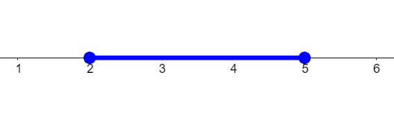
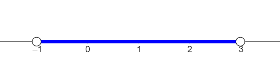
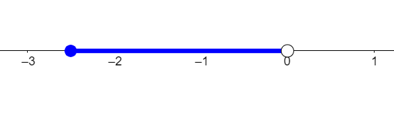
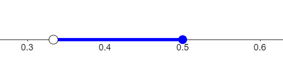
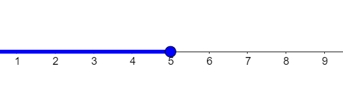
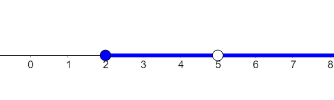
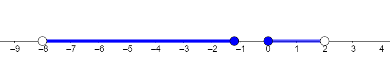
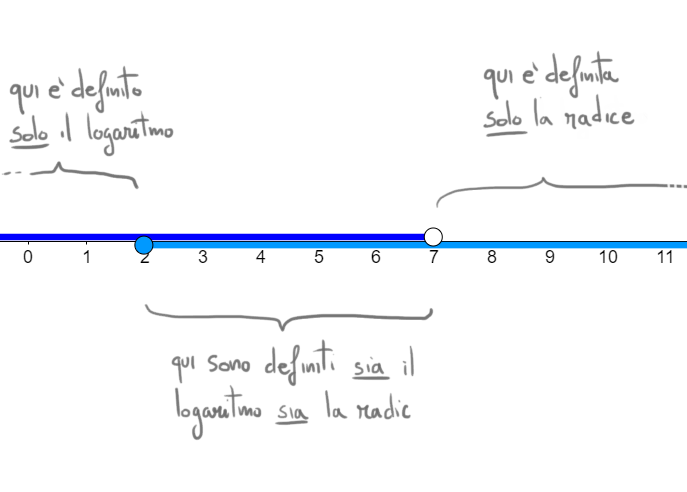
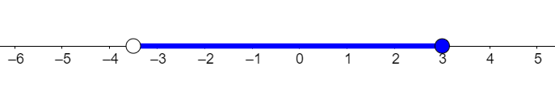
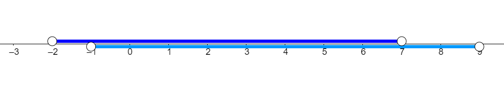

Negli esempi che abbiamo visto fino a questo momento il dominio è stato sempre espresso a parole.
Esempio
Consideriamo la funzione
\[
f(x) = \dfrac{\sqrt{2 - x}}{x}
\]
Il suo dominio (provate ad individuarlo!) è costitutito da
l'insieme dei valori minori o uguali di \(2\) ma diversi da \(0\)
Possiamo dire la stessa cosa in un altro modo equivalente:
Il dominio di \(f\) è l'insieme dei valori
\(x \lt 0\,\,\) oppure \(\,\,0 \lt x \leq 2\)
L'obiettivo di questo paragrafo è introdurre una scrittura simbolica semplice ed efficace per indicare il dominio di una funzione.
Intervalli
Diamo la seguente definizione:
Si definisce intervallo l'insieme dei numeri reali compresi tra due estremi.
Tali estremi possono essere compresi o meno nell'insieme.
Vediamo alcuni esempi di intervalli.
Esempio 1
Consideriamo l'intervallo \(D\) formato da tutti i valori compresi tra \(2\) e \(5\), estremi inclusi.
Possiamo rappresentare l'insieme \(D\) sulla retta reale evidenziando tutta la zona delimitata dai numeri \(2\) e \(5\).
Per convenzione, disegnamo dei pallini pieni in corrispondenza di questi due numeri, perché fanno parte dell'intervallo.

L'insieme \(D\) viene indicato attraverso la seguente scrittura simbolica
\[
D = \left[2\,;\,\,5\right]
\]
Quando vengono usate le parentesi quadrate, si vuole indicare che gli estremi fanno parte dell'intervallo.
Esempio 2
Consideriamo l'intervallo \(E\) formato da tutti i valori compresi tra \(-3\) e \(1\), estremi esclusi.
Possiamo rappresentare l'insieme \(E\) sulla retta reale evidenziando tutta la zona delimitata dai numeri \(-3\) e \(1\).
Per convenzione, disegnamo dei pallini vuoti in corrispondenza di questi due numeri, perché non fanno parte dell'intervallo.

L'insieme \(E\) viene indicato attraverso la seguente scrittura simbolica
\[
E = \left(2\,;\,\,5\right)
\]
Quando vengono usate le parentesi tonde, si vuole indicare che gli estremi non fanno parte dell'intervallo.
Esempio 3
Consideriamo l'intervallo \(F\) formato da tutti i valori compresi tra \(-\dfrac{5}{2}\) e \(0\), con \(-\dfrac{5}{2}\) incluso e \(0\) escluso.
Possiamo rappresentare l'insieme \(F\) sulla retta reale evidenziando tutta la zona delimitata dai numeri \(-\dfrac{5}{2}\) e \(0\).
Disegnamo
un pallino pieno in corrispondenza di \(\dfrac{5}{2}\), perché fa parte dell'intervallo,
un pallino vuoto in corrispondenza di \(0\), perché non fa parte dell'intervallo,

L'insieme \(F\) viene indicato attraverso la seguente scrittura simbolica
\[
F = \Big[-\dfrac{5}{2}\,;\,\,0\Big)
\]
In questo caso
usiamo la partentesi quadra per l'estremo \(\dfrac{5}{2}\) perché fa parte dell'intervallo,
usiamo la partentesi tonda per l'estremo \(0\) perché non fa parte dell'intervallo,
Esempio 4
Consideriamo l'intervallo \(G\) formato da tutti i valori compresi tra \(\frac{1}{3}\) e \(\frac{1}{2}\), con \(\frac{1}{3}\) escluso e \(\frac{1}{2}\) incluso.
Possiamo rappresentare l'insieme \(G\) sulla retta reale evidenziando tutta la zona delimitata dai numeri \(\frac{1}{3}\) e \(\frac{1}{2}\).
Disegnamo
un pallino vuoto in corrispondenza di \(\frac{1}{3}\), perché non fa parte dell'intervallo,
un pallino pieno in corrispondenza di \(\frac{1}{2}\), perché non fa parte dell'intervallo,

L'insieme \(F\) viene indicato attraverso la seguente scrittura simbolica
\[
F = \Big(\dfrac{1}{3}\,;\,\,\dfrac{1}{2}\Big]
\]
In questo caso
usiamo la partentesi tonda per l'estremo \(\frac{1}{3}\) perché non fa parte dell'intervallo,
usiamo la partentesi quadra per l'estremo \(\frac{1}{2}\) perché fa parte dell'intervallo,
Esempio 5
Consideriamo l'intervallo \(H\) formato da tutti i valori più piccoli o uguali di \(5\).
Possiamo rappresentare l'insieme \(H\) sulla retta reale evidenziando tutta la zona precedente \(5\).

L'insieme \(H\) viene indicato attraverso la seguente scrittura simbolica
\[
H = \Big(-\infty\,;\,\,5\Big]
\]
Il simbolo "\(-\infty\)" viene impiegato per indicare che non c'è un limite inferiore.
Generatore automatico di esempi
Consideriamo l'intervallo formato da tutti i valori compresi tra \(-2\) e
\(3\), estremi inclusi.
La sua rappresentazione grafica è
La sua scrittura simbolica è
\[
D = \Big[-2\,;\,\,3\Big]
\]
Scrivere il dominio tramite intervalli
Esempio 1
Consideriamo una funzione \(f\) il cui dominio \(D\) sia costituito da tutti i valori
\(x \geq 2\,\,\) diversi da \(5\)
Graficamente possiamo rappresentare questo insieme evidenziando tutta la zona della retta reale successiva
a \(2\) e disegnando un pallino vuoto in corrispondenza di \(5\), ad indicare che tale valore non appartiene
all'insieme.

Scriviamo il dominio \(D\) come unione di due intevalli:
\[
D = \Big[2\,;\,\,5\Big) \cup \Big(2\,;\,\,+\infty\Big)
\]
Il simbolo "\(\cup\)" significa "unione" ed indica che i valori che costituiscono l'insieme \(D\) sono
tutti quelli che appratengono a \(\Big[2\,;\,\,5\Big)\) oppure a \(\Big(5\,;\,\,+\infty\Big)\).
Notate che così scrivendo il valore \(5\) non è incluso nell'insieme \(D\).
Esempio 2
Consideriamo una funzione \(f\) il cui dominio \(D\) sia costituito da tutti i valori
\( -8 \lt x \leq -\dfrac{6}{5}\,\,\) oppure \( 0 \leq x \lt 2\)
Graficamente possiamo rappresentare questo insieme evidenziando tutta la zona della retta reale compresa tra
\(-8\) e \(-\dfrac{6}{5}\) e quella compresa tra \(0\) e \(2\), disegnando pallini vuoti in corrispondenza di
\(-8\) e \(2\), ad indicare che tali valori non apparengono all'insieme \(D\).

Scriviamo il dominio \(D\) come unione di due intevalli:
\[
D = \Big(-8\,;\,\,-\dfrac{6}{5}\Big) \cup \Big[0\,;\,\,2\Big)
\]
Esempio 3
Consideriamo la funzione
\[
f(x) = ln(-x +7) + \sqrt{x -2}
\]
Determiniamo il suo dominio.
Nella definizione di \(f\) sono presenti due operazioni pericolose:
il logaritmo
\[
f(x) = \color{red}{}ln(\color{black}{}-x +7\color{red}{})\color{black}{} + \sqrt{x -2}
\]
Perché sia definito poniamo il suo argomento maggiore di \(0\):
\[
\begin{align*}
\color{red}{}-x +7 \color{black}{} \gt 0 &\Longrightarrow -x \gt -7
\\\\
&\Longrightarrow x \lt 7
\end{align*}
\]
Quindi l'operazione \(ln(-x +7)\) è definita se \(x\) assume valori nell'intervallo
\[
\color{blue}{}A \color{black}{} := \color{blue}{}\Big(-\infty\,;\,\,7\Big)
\]
la radice quadrata:
\[
f(x) = ln(-x -7) + \color{red}{}\sqrt{\color{black}{}x -2\color{red}{}}\color{black}{}
\]
Perché sia definita poniamo il suo argomento maggiore o uguale di \(0\):
\[
\color{red}{}x - 2 \color{black}{} \geq 0 \Longrightarrow x \geq 2
\]
Quindi l'operazione \(\sqrt{x -2}\) è definita se \(x\) assume valori nell'intervallo
\[
\color{rgb(0,153,255)}{}B\color{black}{} := \color{rgb(0,153,255)}{}\Big[2\,;\,\,+\infty\Big)
\]
Perché la funzione sia definita \(x\) deve appartenere sia all'intervallo \(\color{blue}{}A\), sia all'intervallo \(\color{rgb(0,153,255)}{}B\).
In altre parole il dominio è l'intersezione tra \(\color{blue}{}A\) e \(\color{rgb(0,153,255)}{}B\), ovvero l'insieme dei valori in comune
tra \(\color{blue}{}A\) e \(\color{rgb(0,153,255)}{}B\).
\[
D = \Big[2\,;\,\,7\Big)
\]

Esercizi
Domanda 1
Stabilire quali tra le seguenti scritture indica l'intervallo in figura

\(\Big(-\dfrac{7}{2}\,;\,\,3\Big]\)
\(\Big(-\dfrac{2}{7}\,;\,\,3\Big]\)
\(\Big(-\dfrac{7}{2}\,;\,\,3\Big)\)
\(\Big(-\dfrac{2}{7}\,;\,\,3\Big)\)
Nessuna delle precedenti.
1/2 tentativi disponibili
Mostra la risposta
Soluzione:
L'estremo sinistro dell'intervallo è \(-\dfrac{7}{2} = -3.5\) e non ne fa parte, in quanto
indicato dal pallino vuoto.
L'estremo destro destro è \(3\) ed è compreso, poiché indicato dal pallino pieno.
Di conseguenza l'intervallo rappresentato in figura è
\[
\Big(-\dfrac{7}{2}\,;\,\,3\Big]
\]
Domanda 2
Tra le seguenti, selezionare tutte opzioni che rappresentano lo stesso intervallo
Stabilire quali tra i seguenti insiemi è l'unione degli intervalli
\(A:= \Big(-2 \,;\,\,7\Big)\,\,\) e \(\,\,B:= \Big(-1 \,;\,\,9\Big)\)
\(A \cup B = \Big(-2 \,;\,\,7\Big)\)
\(A \cup B = \Big(-1 \,;\,\,9\Big)\)
\(A \cup B = \Big(-2 \,;\,\,-1\Big)\)
Nessuno dei precedenti insiemi.
1/2 tentativi disponibili
Mostra la risposta
Soluzione:
Nessuno degli insiemi indicati nelle prime quattro opzioni rappresenta \(A \cup B\).
Rappresentiamo graficamente \(\color{blue}{}A\) e \(\color{rgb(0,153,255)}{B}\) per avere più chiara la situazione

Prendendo tutti gli elementi contenuti in \(\color{blue}{}A\) ed in \(\color{rgb(0,153,255)}{B}\) otteniamo l'intervallo
\[
\color{blue}{}A\color{black}{}\cup \color{rgb(0,153, 255)}{}B\color{black}{} = \Big(-2 \,;\,\,9\Big)
\]
Domanda 4
Dati gli insiemi
\[
A = \Big(-2\,;\,\,0\Big] \cup \Big[3\,;\,\,+\infty\Big)
\]
\[
B = \Big(-\infty\,;\,\,-1\Big] \cup \Big[\dfrac{1}{2}\,;\,\,+\infty\Big)
\]
stabilire quali tra le seguenti opzioni rappresenta l'intersezione \(A \cap B\), ovvero l'insieme
costituito da tutti gli elementi che appartengono sia ad \(A\), sia a \(B\).
Gli insiemi \(A\) e \(B\) non hanno elementi in comune.
In questo caso si dice che \(A \cap B\) è l'insieme vuoto e si rappresenta simbolicamente in questo modo
\[
A \cap B = \emptyset
\]